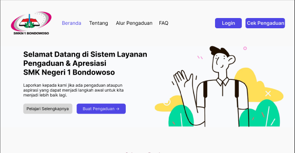
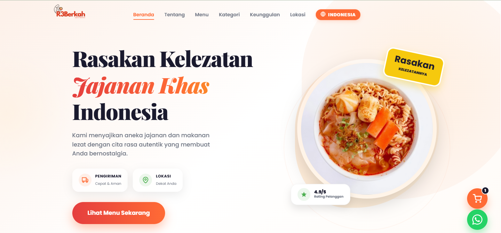

Dika Maulana Ramadani
Siswa Rekayasa Perangkat Lunak | SMKN 1 BONDOWOSO |Junior Front-End Developer
Siswa Rekayasa Perangkat Lunak | SMKN 1 BONDOWOSO |Junior Front-End Developer
Halo! Saya Dika Maulana Ramadani, seorang siswa SMKN 1 BONDOWOSO jurusan Rekayasa Perangkat Lunak (RPL). Saya memiliki minat dan semangat yang besar dalam dunia desain web dan antarmuka pengguna (UI/UX).
Saat ini, saya fokus mendalami dan menguasai dasar-dasar pembuatan website yang interaktif dan menarik menggunakan HTML dan CSS. Bagi saya, merancang sebuah website adalah perpaduan antara logika kode dan nilai estetika seni.
Di luar jam sekolah, saya sering berlatih dengan membuat berbagai macam proyek antarmuka web, mencari referensi desain modern, dan terus belajar untuk mewujudkan impian saya menjadi seorang Web Designer profesional.
Tugas & Proyek Web
Bahasa Utama
Keahlian Styling
SMKN 1 BONDOWOSO
Menguasai struktur semantik web untuk membangun pondasi yang kuat, cepat, dan ramah SEO.
Styling modern dengan Flexbox, Grid, transisi, dan desain responsif yang tajam.
Menghadirkan interaksi dinamis dan logika front-end untuk pengalaman pengguna yang hidup.
Merancang antarmuka yang intuitif dan visual yang estetis untuk pengalaman yang nyaman.
Mahir membuat wireframe, prototyping, dan desain sistem kolaboratif yang presisi.
Bekerja kolaboratif dan menyampaikan ide secara jelas untuk menjaga sinergi tim dan hasil yang optimal.
Mampu membuat rekaman video yang menarik dan mendukung konten visual presentasi.
Merangkai footage dan menambahkan efek serta irama menggunakan CapCut untuk hasil profesional.
Mengelola jadwal dan prioritas dengan disiplin agar semua tugas selesai tepat waktu.
Belajar membuat aplikasi mobile cross-platform dengan tampilan modern dan responsif.
Memperdalam pengembangan back-end menggunakan framework PHP yang terstruktur dan aman.

Proyek ini adalah pengembangan antarmuka utama (Landing Page) untuk Sistem Layanan Pengaduan & Apresiasi SMK Negeri 1 Bondowoso. Website ini berfungsi sebagai gerbang utama bagi siswa, guru, maupun masyarakat untuk menyampaikan aspirasi atau laporan demi kemajuan sekolah.
Lihat Proyek
Website ini dibangun untuk mendukung digitalisasi UMKM lokal dengan menyajikan informasi menu, lokasi, dan kontak pemesanan secara efisien dan profesional.
Lihat ProyekSedang menempuh pendidikan kejuruan di bidang Rekayasa Perangkat Lunak. Mempelajari fundamental struktur web, logika dasar, dan antarmuka pengguna.
Mengikuti tugas akhir pembuatan layout website statis murni tanpa menggunakan framework eksternal, melatih kemampuan styling CSS seperti flexbox dan grid.
Awal mula ketertarikan saya terhadap dunia web dengan mempelajari semantic tag dasar HTML untuk menyusun informasi terstruktur pada peramban web.
Punya ide proyek atau ingin bekerja sama? Silakan hubungi saya langsung melalui email:
Kirim Email Ke Dikaramadanidikamaulana@gmail.com